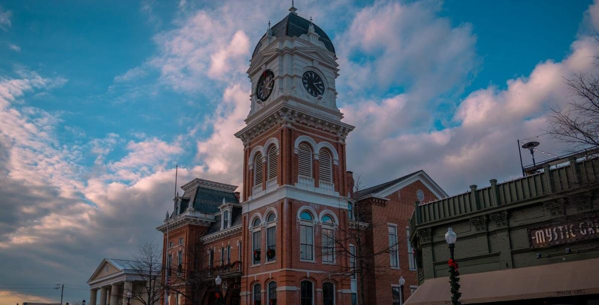
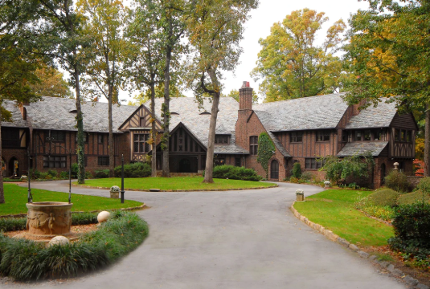
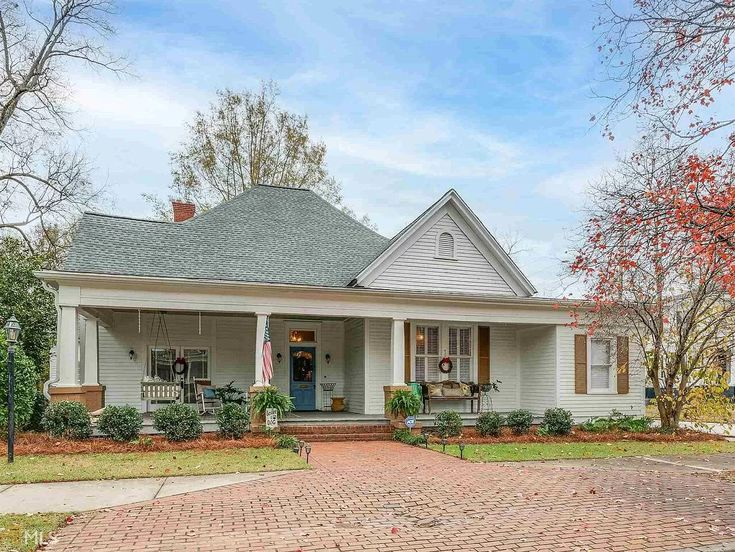
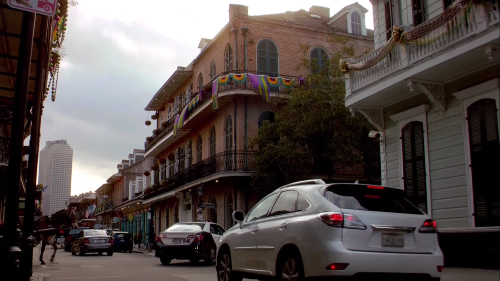
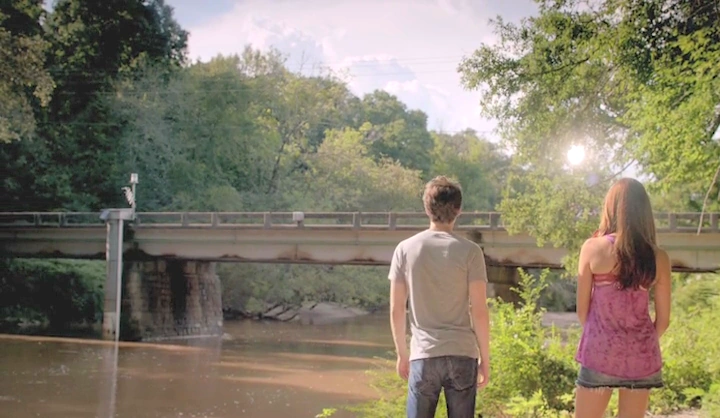

Location 01
Mystic Falls: Covington, GA
Although Mystic Falls is fictional, most of the show was filmed in Covington, Georgia. The charming town square serves as the heart of Mystic Falls and appears throughout the entire series. Fans can visit many recognizable spots right in the downtown area.
Find on Map
Location 02
Elena Gilbert's House: Covington, GA
Elena's home, where she lives with Jeremy and Aunt Jenna, is located in Covington. While it's a private residence, fans often visit to see the exterior used in the show.
Find on Map
Location 03
The Salvatore Boarding House: Covington, GA
The iconic Salvatore mansion exterior was filmed at Glenridge Hall in Sandy Springs, Georgia (now demolished). Later seasons used other properties and studio sets to recreate the grand estate. It remains one of the most recognizable locations from the series.
Find on Map
Location 04
Caroline Forbes' House: Covington, GA
Caroline Forbes' home, where she lives with her mom Sheriff Liz Forbes, is located in Covington, Georgia. The exterior was filmed at a private residence in the area. Many important moments happen here — from Caroline's transformation into a vampire to emotional scenes with her mother.
Find on Map
Location 05
Mikaelson Compound: New Orleans, LA
The New Orleans home of the Mikaelsons from The Originals is actually located in New Orleans. Although the exterior shots were filmed in New Orleans, the inside was recreated in studie sets in Georgia.
Find on Map
Location 06
Mystic Grill: Covington, GA
The Mystic Grill is a real restaurant in Covington inspired by the show. While interior filming was done on a set, the exterior matches the series and is a must-visit for fans. Visit the Mystic Grill Website →
Find on MapLocation 07
Lockwood Mansion: Covington, GA
The Lockwood Mansion exterior was filmed at a historic home in Covington. This location hosted many dramatic events, including town gatherings and supernatural confrontations.
Find on Map
Location 08
Wickery Bridge: DeKalb County, GA
Wickery Bridge, where Elena's parents died and where she later nearly loses her life, was filmed on a real bridge in Georgia. It is one of the most emotionally significant locations in the show.
Find on Map